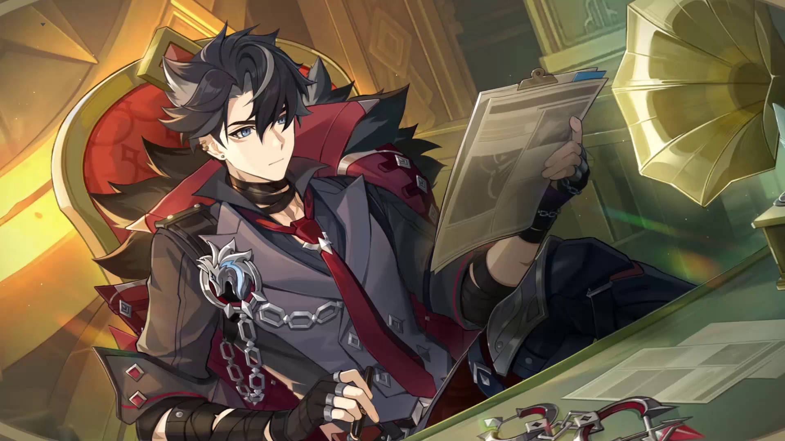

Công tước của Pháo Đài Meropide, là vị chúa tể ẩn mình trong biển tối.

Miêu tả về ngài công tước lạnh lùng!
Có một thực tế rất đáng mừng với Sảnh Kiểm Luật, đó là đa số công dân Fontaine đều tuân thủ luật pháp, và
Pháo Đài Meropide sẽ không xuất hiện trong quỹ đạo cuộc đời họ.
Đồng thời, lại có một thực tế hợp tình hợp lý nhưng vô cùng đáng buồn: Những phạm nhân mãn hạn tù rất khó để
hòa nhập lại cuộc sống trên mặt đất, và đa số đều không muốn nhắc đến trải nghiệm của bản thân ở dưới nước.
Là một địa điểm cụ thể, nhưng Pháo Đài Meropide giống với một loại khái niệm nào đó hơn, xuất hiện trong ca
dao tục ngữ của Fontaine như một biểu tượng của sự cảnh cáo, bất hạnh và trừng phạt. Và người phụ trách của
khái niệm này là ai thì cũng chẳng quan trọng.
Nhờ đó, Wriothesley sinh sống tại Fontaine như một kẻ ẩn dật, không hề tương xứng với thân phận "công tước"
của mình.
Khi mọi người nói rằng "còn gây rối thì tôi sẽ đấm cho bay đến Pháo Đài Meropide" hoặc "công việc này quá
tệ, tôi thà xuống dưới biển vặn ốc vít còn hơn", thì người quản lý pháo đài dưới nước có lẽ đang bước trên
con đường lát đá sang trọng để tới tiệm cà phê, chuẩn bị gói mang về một phần trà chiều cho mình rồi.
Câu chuyện về chiếc Vision Wriothesley
Đứng trước khu vực đăng ký của Pháo Đài Meropide, Wriothesley thò tay vào túi... định trình ra cho nhân viên
tờ giấy có tên anh ấy với thời gian thi hành án rõ ràng.
Cùng với tờ giấy được lấy ra, còn có một viên thủy tinh có kích cỡ bằng lòng bàn tay.
...Không, đây không phải viên thủy tinh gì hết. Wriothesley chớp mắt, từ khi nào mà anh có thứ này?
Nhân viên quầy đăng ký hít một hơi thật nhẹ. Đó là một người phụ nữ có vẻ ngoài nghiêm túc, trên mặt có nếp
nhăn, bộ dạng kinh ngạc ngay lập tức được kiểm soát, tay cầm bút khẽ siết chặt hơn. Môi cô ấy mấp máy nhẹ,
cuối cùng vẫn khép kín.
Wriothesley lập tức nghĩ: Chắc chắn cô ấy có nhiều kinh nghiệm sống ở đây. Vì thế, anh cố gắng giữ kín
Vision trong lòng bàn tay, nhỏ tiếng hỏi: "Thưa quý cô kính mến, xin hỏi..."
Nhân viên đăng ký đứng tuổi không trả lời. Cô ấy lấy mảnh giấy từ tay anh, lạnh nhạt liếc nhìn phía sau như
thể đang xác nhận phạm nhân đăng ký tiếp theo. Tuy nhiên, sau khi ghi lại những thông tin cần thiết, cô đã
viết thêm điều gì đó bên lề của tờ giấy đưa lại cho anh: "Hãy giấu kỹ".
Wriothesley ngay lập tức chắc chắn một điều: Ngày tháng ở đây hẳn sẽ khó sống hơn trên phố.
Rất may mắn, dù người đứng đằng sau là ai thì khi đó anh cũng đã che chắn hết tầm nhìn phía sau, càng may
mắn hơn, người đăng ký tốt bụng đã sẵn lòng cho anh một lời nhắc nhở. Tiếc là sau này Wriothesley không gặp
lại cô ấy nữa. Cũng không bất ngờ, khi đó Pháo Đài Meropide có tỉ lệ luân chuyển nhân sự rất cao.
Cuối cùng cũng chính thức bước chân vào Pháo Đài Meropide, việc đầu tiên Wriothesley làm là lặng lẽ giật đứt
vài sợi chỉ, dùng một đoạn dây sắt được mài nhọn để khâu Vision của mình vào giữa lớp áo.
Anh ấy có hiểu biết nhất định về cuộc sống của một kẻ vô gia cư, điều khó nhất không phải là kiếm được tài
nguyên, mà là giữ được chúng. Con người ai cũng phải ngủ, sẽ có những lúc mất cảnh giác, tài sản tích lũy
được ban ngày, thường sẽ dễ dàng bị lấy đi khi say giấc, thậm chí chưa thể coi là bị cướp.
Vision càng không phải thứ tài sản tầm thường, hẳn sẽ có người hứng thú với nó bất kể lý do. Người có Vision
cũng sẽ dễ dàng thu hút những ánh mắt không mấy thiện cảm.
Ngày tháng về sau, những lo ngại của anh đã được xác nhận. Anh được biết, có đến hai ba trường hợp bị đánh
cắp Vision. Có vô số lời đồn khác nhau về tiến triển vụ việc và kết cục của nạn nhân, nhưng Wriothesley
không tỏ ra quan tâm cho lắm.
Anh vẫn cảm thấy may mắn. Nhưng thật khó để anh ấy cảm nhận niềm vui thực sự khi phải đạp lên thất bại thảm
hại của người khác để giữ mình an toàn.
Một thời gian dài sau đó, anh vờ như mình chưa từng được nhận sự thương xót của thần linh. Nhưng cũng giống
với việc lăn lộn bươn chải ngày trước, anh ấy đủ sức ứng phó với nó.
Cho đến khi tuổi tác của anh gần gấp đôi so với thời điểm đó, anh nhận được một lời mời từ Palais Mermonia.
Theo thông lệ, những công dân được nhận tước hiệu danh dự đều phải tham gia buổi lễ trao tặng. Như danh hiệu
"công tước" đặc biệt đó, nghe nói nghi thức còn có phần long trọng hơn.
Wriothesley đã mượn lý do công việc đặc thù để từ chối lịch sự, chỉ mong muốn ký tên và nhận chứng nhận đơn
giản. Không thích sự ồn ào và có thể xuề xòa qua loa đôi chút, về điểm này anh ấy thật không giống một người
Fontaine.
Sau rất nhiều ngày làm việc và vô số lá thư qua lại, Palais Mermonia cuối cùng cũng chấp thuận.
Trước khi rời thế giới dưới nước, Wriothesley đã cầm viên Vision sau nhiều năm không gặp. Anh lắc nhẹ, nó có
vẻ nhẹ hơn anh nhớ, và nhỏ hơn lòng bàn tay bây giờ. Anh tìm một vị trí trên trang phục rồi treo nó lên.
Người đầu tiên bày tỏ thái độ về chuyện này, chính là vị thẩm phán tối cao đã trao tặng danh hiệu cho anh.
Neuvillette khẽ cười một cách lịch sự, rất có chừng mực, nhưng trông anh ấy có vẻ còn vui hơn cả
Wriothesley: "Xin chúc mừng, cuối cùng anh đã tìm được điều mình muốn làm rồi."
Wriothesley nghe xong chỉ cười, không giải thích gì thêm.

.webp)